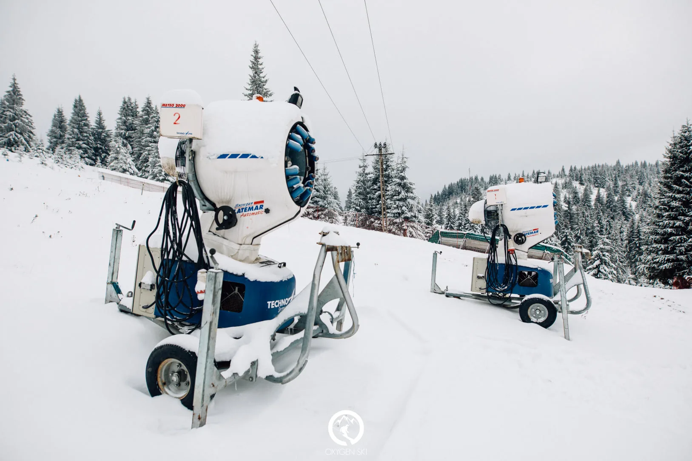
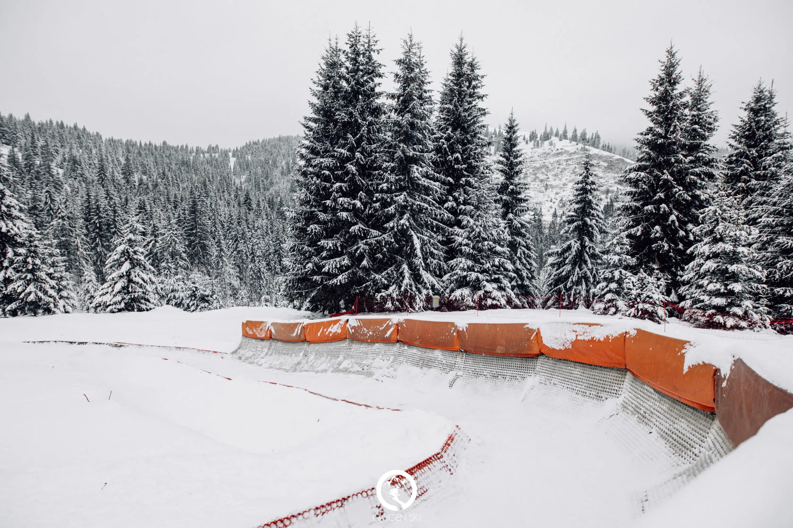
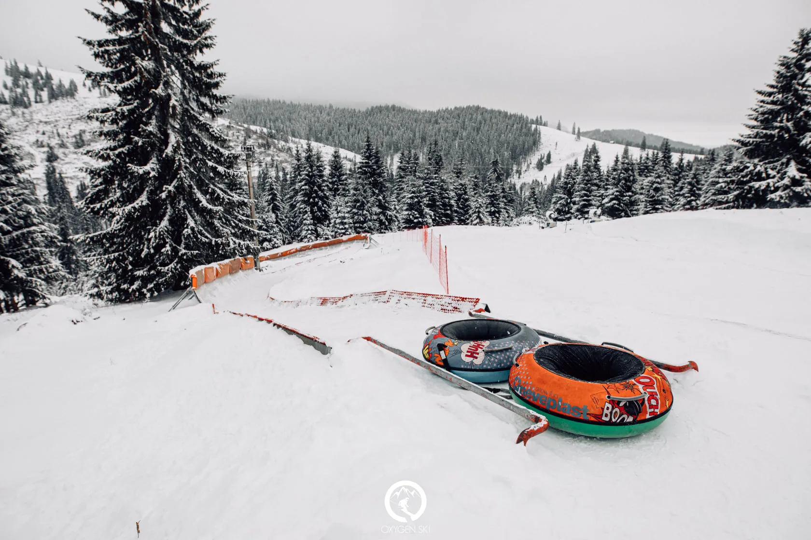
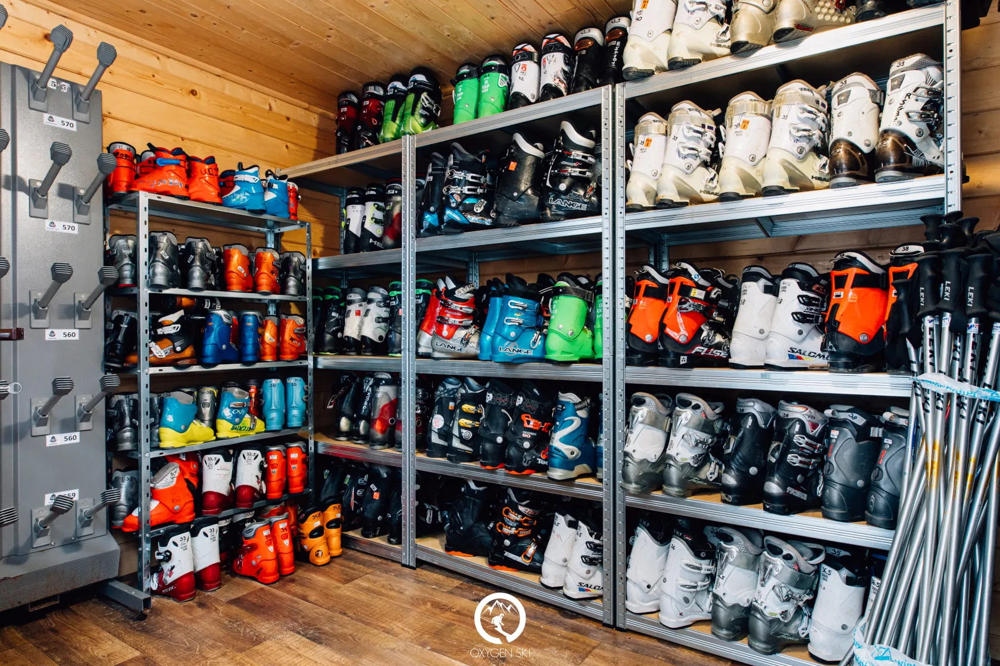
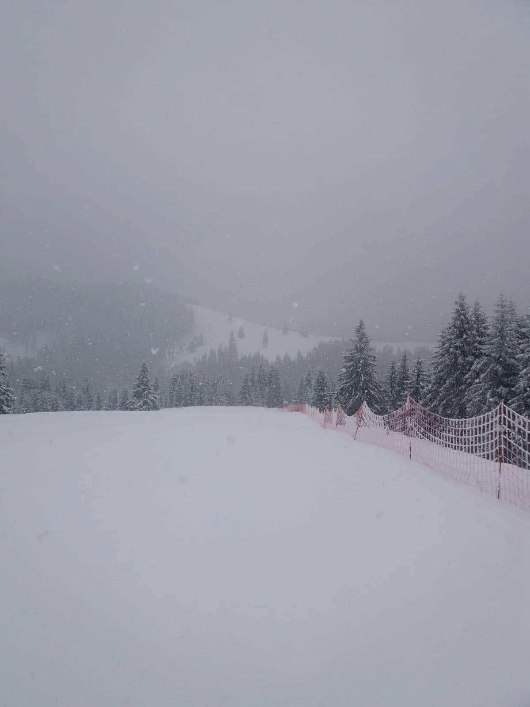
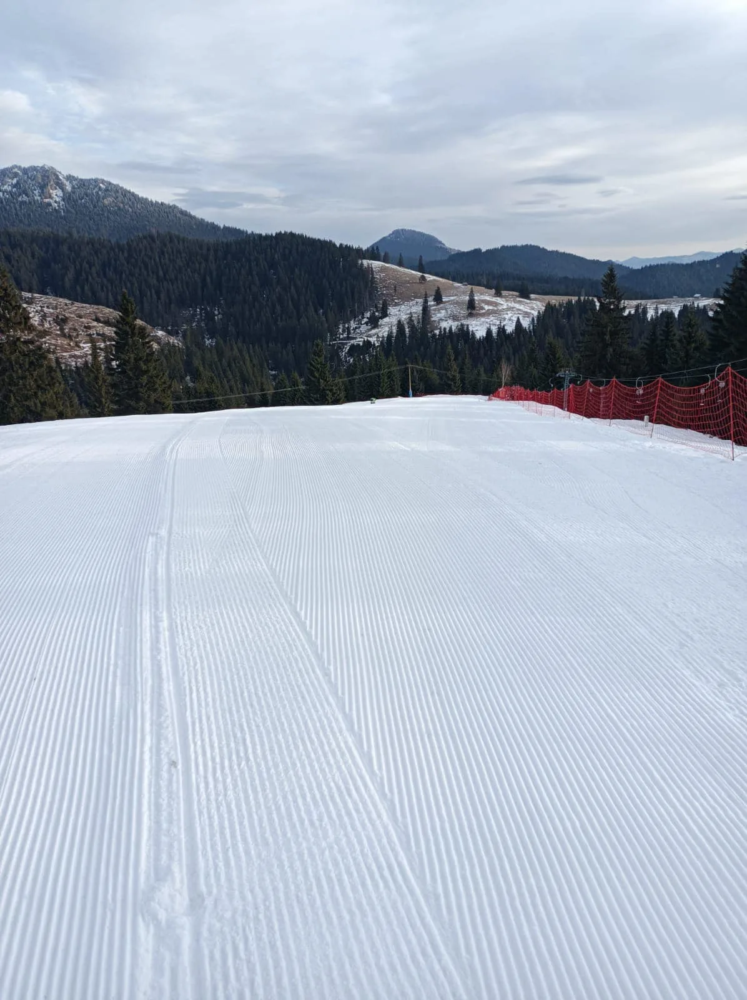
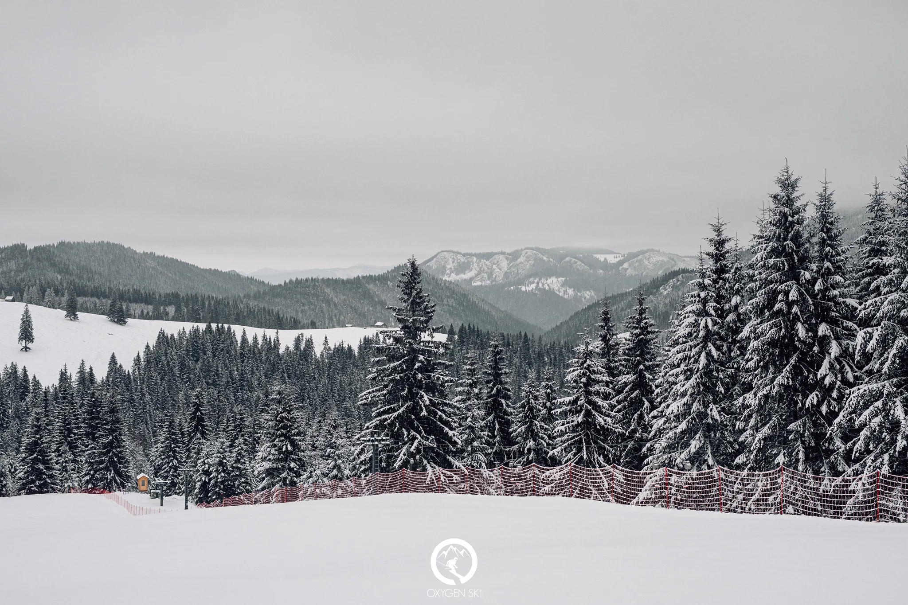
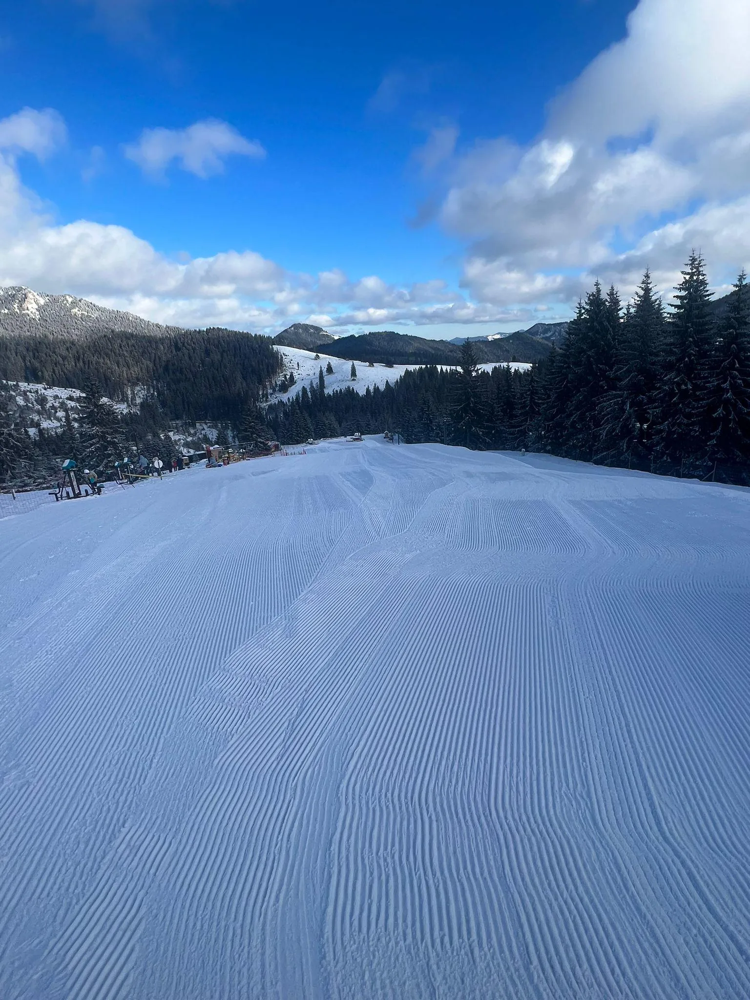

Pârtia de schi Oxygen — parte din complex, deschisă în sezon iarnă. Detalii zilnice (zăpadă, orar, condiții) publicăm pe Facebook.
Pârtia este integrată în complexul Oxygen Resort — alături de pista de bob, cabine, restaurant și parc de aventură. O singură destinație, mai multe experiențe montane.
Stratul de zăpadă, orarul, telescaunele și evenimentele de weekend le actualizăm pe Facebook în timp real. Pentru rezervări sau întrebări imediate — telefonul rămâne cel mai sigur.
Pârtia de schi Oxygen este integrată în complexul nostru, la 1240 de metri altitudine, pe creasta Munților Hășmaș — la câteva minute de Lacul Roșu. Sezonul este iarna — decembrie până în martie, în funcție de stratul de zăpadă. Pentru condiții zilnice (stratul, orarul funcțional, telescaun), publicăm actualizări pe pagina noastră de Facebook, conform recomandării oficiale.
Ce face experiența specială: nu este doar o pârtie separată — este parte dintr-un complex. După o zi pe zăpadă, poți coborî la restaurantul panoramic, poți dormi într-una din cele 17 cabine din pădure, și poți începe ziua următoare la salină sau pe pista de bob. Un singur munte — multiple feluri de a-l trăi.
Pentru orice întrebare — rezervări de grup, informații despre condițiile actuale, parcare, transport — contactul direct rămâne telefonul central: 0372 · 903 · 789.









